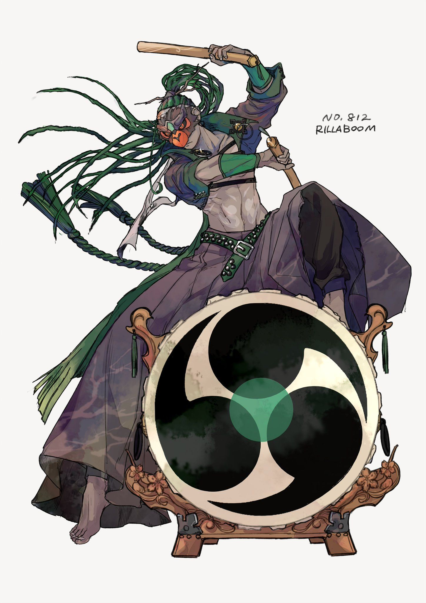

Zackary "Zack" Bell
Personality: Zack is a very laid-back and chill person, who has a deep passion for music. However, he was generally not well-liked by his original team and he himself has openly admitted that he has no friends, is quite cowardly, lazy, womanizing, and has a habit to act selfishly. Despite his many flaws, Zack does possess a good side. After being transported to the Universe of the rest of the Agents, he finally tries to become more of a hero and helps the Agents, occasionally acting selfless, and even though still retaining some of his greedy and selfish nature, he contributes to saving the world with his new friends.
Age: 16
Gender: Male
Eye Color: Dark Brown
Hair Color: Brown with Green streaks
Skin Color: Light Tan
Hometown: Tuffield
Home Region: Galar
Trivia:
Zack’s favorite food is Cooked Apricorns. His team makes fun of him for this since they were the building blocks of Pokéballs and should not be eaten.
Zack is a lady killer, constantly having women fall in love with him in every region that he visits.
Zack’s true dream is to be the leader of a band with his Rillaboom and other like-minded individuals.
Zack loves to drink and visit bars. Although these drinks are always mocktails since he is not allowed to consume alcohol yet, he invites all of his guy friends to a nice pub once in a while.
Zack once tried to join a band in Spikemuth, but the two types of music - the band’s choice of rock and Zack’s choice of pop clashed too much and he was not accepted.
Pokémon:

Rillaboom♂
“Bonzo”
Grass
Ability: Grassy Surge
When Bonzo enters a battle, he releases a light-green ring of energy from his body onto the grass around him, powering up Grass-type moves.
Personality: Bonzo has a kind disposition and values harmony within any group he’s a part of. He is also passionate about making music with his trainer. Bonzo is very sensitive towards discord that could threaten the group's harmony and keeps a strict watch for such actions (most created by Zack, Ivo, or Lilith). Due to his strong sense of unity, Bonzo will ferociously defend his allies from trouble.
MOVES:
Drum Beating (Grass)
Bonzo beats his drum, causing a pair of roots to appear out of the ground and strike the opponent.
Grassy Glide (Grass)
Bonzo uses the Grassy Terrain to slide in the direction of the opponent and tackles them.
Drain Punch (Fighting)
Bonzo's fist becomes surrounded by a black orb with blue-white sparkles, outlined in green. When he punches the opponent, green, sparkling energy appears where the opponent was hit, which flies back towards Bonzo in an orb, bathing him in a sparkling green glow that heals it.
High Horsepower (Ground)
Bonzo's body becomes surrounded by an orange aura. He then charges at the opponent and slams into them with great force.

BURST
As a user of Burst, Ivo can use many of the abilities of the Pokémon he combines with Goliath, his Golisopod. This fusion gives Ivo extra armor, super strength, powerful slashing claws, 2 extra pairs of arms, and control over pressurized water that comes out of his body.
TECHNIQUES:
Zack plays a extensive riff on his drum, causing massive thorny vines to burst from the earth. The vines surround the opponent, shoot them up in the air, and crushes the foe in the form of a tree.
Zack plays a specific beat, activating Grassy Surge and creating Grassy Terrain. Zack then jumps off the drum and uses it as a surfboard, gliding towards the enemy and attacking them with a mighty punch.